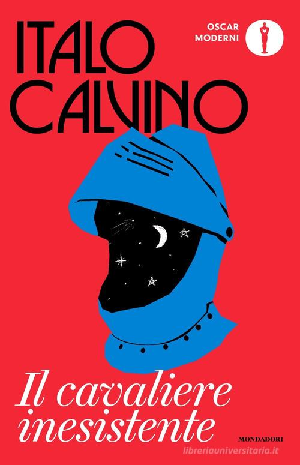

I miei libri preferiti
Il Barone Rampante di Italo Calvino
Trama
Il Barone Rampante è un romanzo di Italo Calvino pubblicato nel 1957. Racconta la storia di Cosimo Piovasco di Rondò, un giovane nobile che decide di vivere sugli alberi per sfuggire alle convenzioni sociali e alla rigidità della sua famiglia. Il romanzo esplora temi come la libertà, l'individualismo e la critica alla società del tempo, offrendo una narrazione ricca di fantasia e simbolismo.
Il Visconte dimezzato
 style="width: 60%; height: auto;">
style="width: 60%; height: auto;">
Trama
Il Visconte dimezzato è un romanzo di Italo Calvino pubblicato nel 1952. Racconta la storia di Medardo di Terralba, un visconte che viene colpito da una palla di cannone durante una battaglia e si ritrova diviso in due metà: una metà buona e l'altra metà cattiva. Il romanzo esplora temi come la dualità dell'animo umano e la lotta tra il bene e il male.
Il Cavaliere inesistente
Trama
Il Cavaliere inesistente è un romanzo di Italo Calvino pubblicato nel 1959. Racconta la storia di Agilulfo, un cavaliere che esiste solo come armatura vuota, senza un corpo o un'anima. Il romanzo esplora temi come l'identità, la realtà e l'assurdità della condizione umana, offrendo una narrazione ricca di ironia e riflessione filosofica.


 alt="Copertina dell'album Pain Remains di Lorna Shore"
style="width: 60%; height: auto; ">
alt="Copertina dell'album Pain Remains di Lorna Shore"
style="width: 60%; height: auto; ">